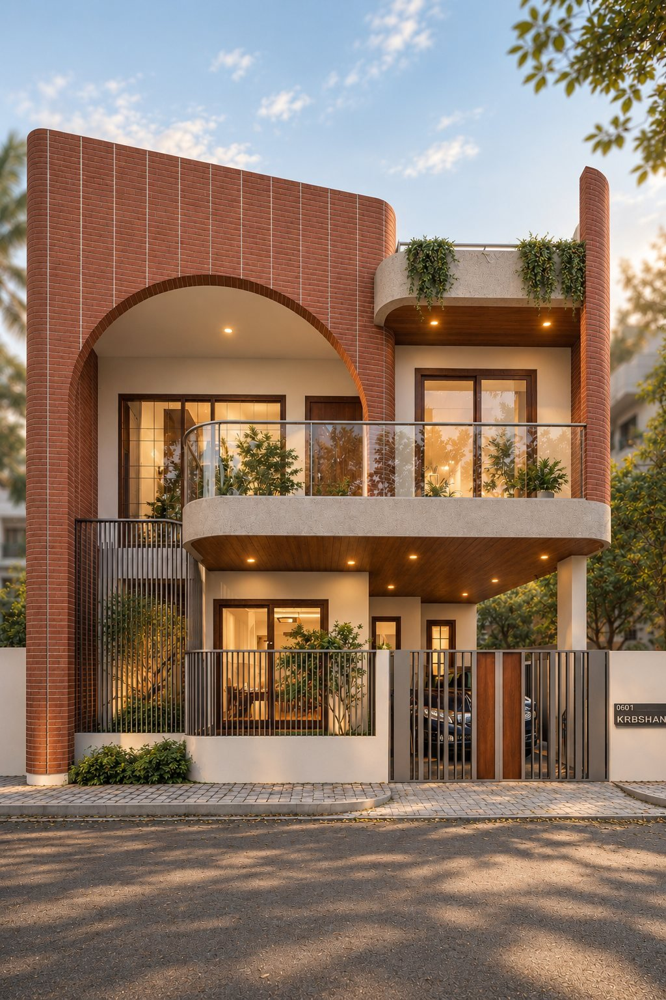

01 · ARCHITECTURAL DESIGN
Start with a clear, considered plan.
Site analysis, architectural concepts, master planning, elevations, approvals and detailed working drawings for residential, commercial and infrastructure projects. Our planning work connects design intent with engineering and construction requirements.
- Site analysis & feasibility
- Architectural concepts
- Master plans & elevations
- Approvals & working drawings

02 · ENGINEERING & EXECUTION
Engineering coordinated through execution.
Structural and civil engineering, technical planning, design coordination, project documentation and execution support. We coordinate design and site teams to carry approved plans through construction.
- Structural design coordination
- Civil engineering solutions
- Technical planning
- Project documentation & execution support

03 · CONSTRUCTION
Disciplined delivery, quality workmanship.
Complete construction execution, including structural work, steel work, masonry, plastering, flooring and finishing with strict quality control. Design, engineering and construction are coordinated to carry the approved project intent through to handover.
- Structural & steel work
- Masonry & plastering
- Flooring & finishes
- Site coordination & quality control